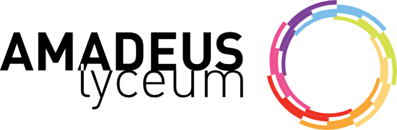

University: Vrije Universiteit Amsterdam 2026-present
High School: Amadeus Lyceum, vleuterweide 2020-2026

Job: Chef, FoodExplore 2025-present
Preparing desserts and maintaining kitchen standards.
Job: Stocking clerk, Jumbo foodmarkt 2023-2024
Responsible for restocking shelves, organizing products, and helping customers.
Job: Bread delivery, DoorB 2022-2023
Ensuring delivery of fresh bread to customers between 6:00 AM and 7:30 PM.